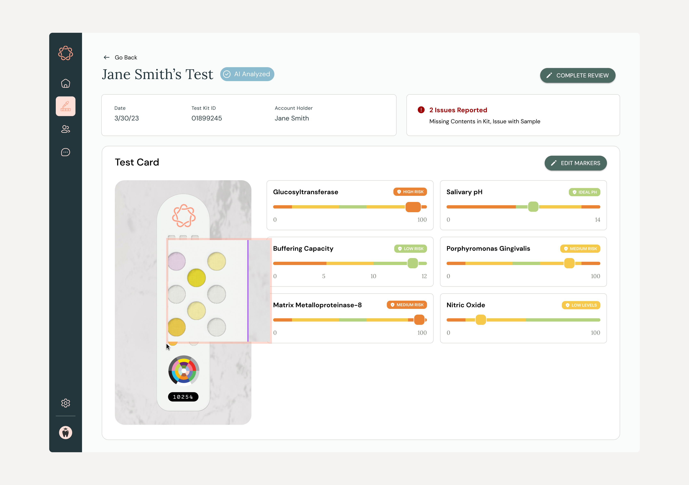

At-Home Oral Health Testing

Our client envisioned an at-home oral health test to bring accessible and affordable care to dental deserts and improve awareness to oral-systemic health, oral health's connection to diseases such as diabetes and heart disease.
"...nearly 1.7 million people in the US did not have access to dental clinics within a 30-minute drive, and 24.7 million lived in dental care shortage areas."Dental Clinic Deserts in the US: Spatial Accessibility Analysis (2024)
At home, you could take a saliva sample and scan your test card. Computer vision would be able to interpret your results and the app would assess your risk levels and provide tailored recommendations to improve your oral health. Our client needed a prototype to raise funds through investors and build an MVP to pilot test card efficacy.
Outcomes
- Partnered with Engineering team to build a pilot MVP of the end-to-end experience.
- Client demoed and received a grant from a top dental association
- Coached a college hire with a technical background to play a Product Designer role
My Role
I led and created an end-to-end onboarding redesign prototype to define the north star design. partnered with the product manager, marketing, and customer support team to uncover the root of why drop-offs were happening and drive design solutions.
Test cards were being prototyped and finalized prototyped with the manufacturer so we used placeholders in the design.
Team
Company
Early-Stage Startup
Industry
Healthcare
Closing the Knowledge Gap

Health Education Through Accessible Jargon
We needed to make the dental jargon understandable for a wide audience. The value was helping at-home testers understand not just what we already know, brushing and flossing, but understand other factors, including the effect of acidity. For example, Internally we would use "caries" instead of "cavities" to speak more like dental professionals but jargon would be confusing out of the gate for our users. We wanted them to understand how the test worked so we leveraged progressive disclosure to provide more education once users digested surface level concepts.
Easing users in with Progressive Disclosure
We needed to make the dental jargon understandable for a wide audience. The value was helping at-home testers understand not just what we already know, brushing and flossing, but understand other factors, including the effect of acidity. For example, Internally we would use "caries" instead of "cavities" to speak more like dental professionals but jargon would be confusing out of the gate for our users. We wanted them to understand how the test worked so we leveraged progressive disclosure to provide more education once users digested surface level concepts.
Dental Provider Patient Health Dashboard Concept
I designed a concept app for providers to enable our client to explore providers as a channel. They'd be able to view their office's oral health and identify trends in patient health, reorder tests within the app when low.
Training Computer Vision to Read Accurately

Because we needed to assess pilot computer vision's ability to accurately read test cards, we created a queue of test results that trained startup employees could review computer vision readings and correct them. Incorrect readings could lead patients and providers to take unnecessary action or downplay the severity of a patient's health.

Maintainability Updating Material 3 to Brand Colors

I partnered with the Engineering Lead to re-theme a Material 3 front-end UI library, React Native Paper, so that our Figma UI kit and front-end components would align to a single source of truth. I created a color theme .json file.
Saving Client Funds using Free Fonts
The brand guidelines provided by the client specified two paid license fonts, however the client didn't have a license to use them. They'd cost nearly $1000 to acquire. I put together a quick comparison with free Google Fonts alternative that preserved the original intent. These are not huge expenses, but for a startup still seeking funding, every dollar counted.